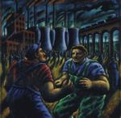

| Artist: | King Crimson |
| Title: | Heavy ConstruKction |
| Label: | Discipline DGM0013 |
| Length(s): | 70+48+68 minutes |
| Year(s) of release: | 2000 |
| Month of review: | [01/2001] |
| 1) | Into The Frying Pan | 6.20 |
| 2) | The ConstruKction Of Light | 8.29 |
| 3) | ProzaKc Blues | 5.25 |
| 4) | Improv: München | 8.35 |
| 5) | One Time | 5.44 |
| 6) | Dinosaur | 5.24 |
| 7) | Vrooom | 4.44 |
| 8) | FraKctured | 8.46 |
| 9) | The World's My Oyster Soup Kitchen Floor Wax Museum | 7.38 |
| 10) | Improv: Bonn | 9.22 |
Disc 2:
| 1) | Sex, Sleep, Eat, Drink, Dream | 4.30 |
| 2) | Improv: Offenbach | 6.30 |
| 3) | Cage | 3.54 |
| 4) | Larks' Tongues In Aspic: Part Four | 12.51 |
| 5) | Three Of A Perfect Pair | 3.42 |
| 7) | Heroes | 8.41 |
(includes live concert video) Disc 3:
| 1) | Sapir | 5.40 |
| 2) | Blastic Rhino | 4.13 |
| 3) | Light Please (part 1) | 0.56 |
| 5) | Off And Back | 4.11 |
| 6) | More (and Less) | 3.13 |
| 7) | Beatiful Rainbow | 6.59 |
| 8) | 7 Teas | 4.07 |
| 9) | Tomorrow Never Knew Thela | 4.49 |
| 10) | Uböö | 7.59 |
| 11) | The Deception Of The Thrush | 11.10 |
| 12) | Arena Of Terror | 3.24 |
| 13) | Lights Please (part 2) | 4.55 |
The title track of the studio album is up next. After a percussive intro the song moves into the stratified direction of the Discipline line-up. The vocal parts is much nicer than the one of the previous track, but the repetitive guitar parts are rather standard sounding if you are familiar with the eigties line-up. ProzaKc Blues opens with menacing "keyboards" and does like its title suggest has strong blues leanings. The vocals are a bit in the direction Tom Waits (or better yet, if you can, recall the father in Faith No More's RV on Angel Dust). The blues you hear is of course not too standard, but has some nicely dissonant twangs and thangs to go with it. Time for improvisation in Munchen. After a loose beginning the track ends with nice heavy chords. One Time and Dinosaur are two of the more Beatles like tracks from Thrak. A strong melody in the both (and some nicely ironic lyrics in the second) make for a welcome melodic interlude. We continue then with VROOOM, hard edged but also soft and tinkling. FraKctured returns us to The ConstruKction Of Light with strong ascending chords, The World's My Oyster Soup Kitchen Floor Wax Museum brings back the blues and the noisy and heavy Bonn improvisation closes the first disc.
The second disc is much shorter, but is also more varied. The best track of the last studio album Larks' Tongues In Aspic Part Four is present here (the studio version is better I think). The disc opens however with the scratching of a record in Sex. Sleep, Eat, Drink, Dream and after the tasteful bass and soundscapes of the Offenbach improvisation we end up in Thrak's Cage. Good song, with good singing. Back to the eighties with Three Of A Perfect Pair. Again incisive lyrics over a acoustic guitar again gives time for a breather. The Deception Of The Thrush (the first of two) is a shimmering soundscapist piece. The band surprisingly ends with a vibrating, both bouncy and noisy version of Bowie's Heroes.
The third disc is in my opinion an odd one. Quite a few tracks and all in all the line seems to go out of the music. Sapir is probably an improvisation in view of the fact that it is an anagram of the place where it was recorded, Paris. Blastic Rhino does not ring any bells either and sounds noisy and industrial. Fripp's voice over can be heard on Lights Please (Part 1), not really a track, more of a joke. cccSeizurecc is a piece that opens sluggish but soon we get into the rapids and the tracks turns out to be quite humouristic. Off And Back is a pun on Offenbach where it was recorded. In More (And Less) the bleeps and zweeps start it all off, and we end with mysterious soundscapes. Beatiful Rainbow (typo?) is world music turning for the tribal at the end, while 7 Teas is not really a back to Seventies as one might expect.
Tomorrow Never Knew Thela does not to my ears include any Thela Hun Ginjeet but does include lyrics of the Beatles song Tomorrow Never Knows. A vague track with distorting guitars. Sampled vocals and heavy hitting percussion Uböö that has quite a bit of pace. The rather calm The Deception Of The Thrush occurs now for the second time and it is followed by applause and Belew singing and playing acoustic guitar. In the precursor to Light Please (Part 2) we here soundscapes and improvisational percussion while during the track we here applause and the return of "Will the gentlemen pass me his camera" and the rest of the incident.
According to the cd booklet for many of the concerts separate live recordings will be made available, probably through the Club Releases.